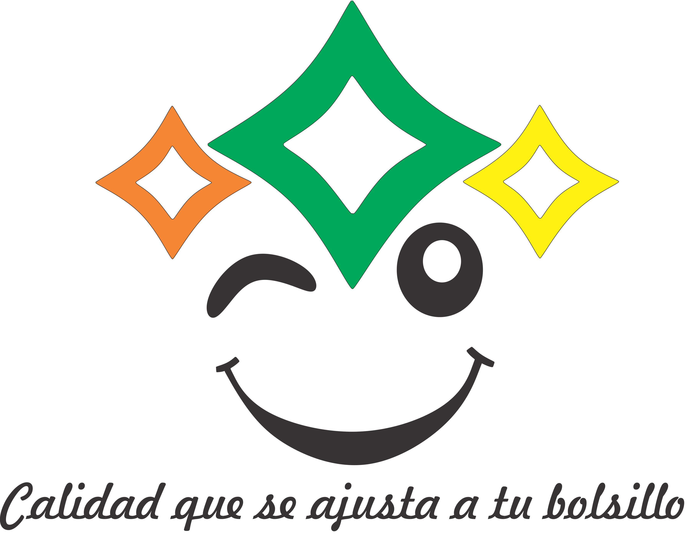

BIENVENIDO A FRUTERIA Y ABARROTES MOTA 
¿Quiénes somos?
Una empresa dedicada a la comercialización de productos de supermercado, Desde hace 20 años creando una gran experiencia en nuestros servicio y calidad de los productos que ofrecemosRespeto:
Nos dirigimos al cliente con todo el respeto. Dentro de la empresa respetamos las culturas diversas que forman parte de este gran equipo de trabajo.Responsabilidad:
Actuamos de forma responsable con nuestras obligaciones hacia el cliente como hacia el gerente de la empresa, tomando en cuenta las necesidades del cliente como la de cada uno de los integrantes que conforman esta empresa.Honestidad:
Actuamos de manera honesta en cuanto a incidentes dentro de la empresa como en la transparencia de nuestro giro de negocio.Integridad Laboral
Dentro de la empresa tomamos en cuneta y respetamos cada cultura a la que pertenece cada integrante de la empresa.Responsabilidad social
Nos esforzamos por cambiar hábitos de los clientes a reutilizar bolsas y a participar en la responsabilidad social